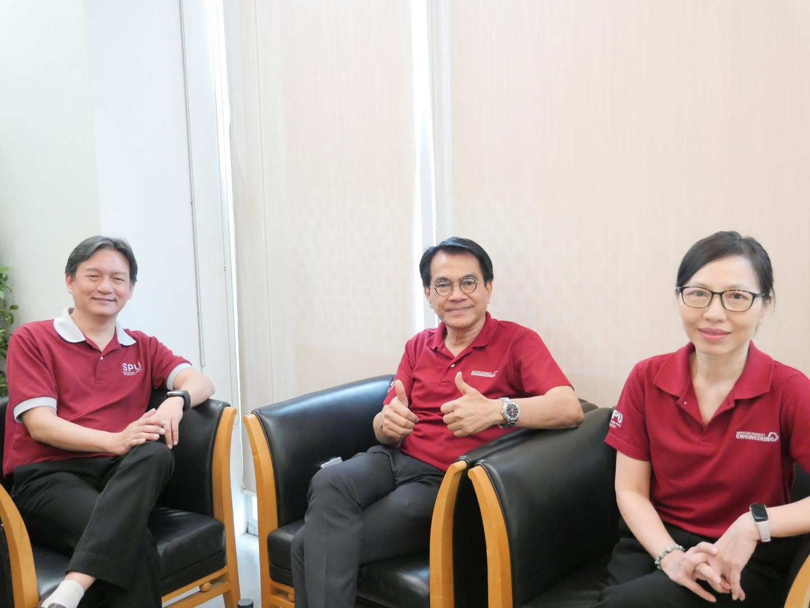

ด้วยวิสัยทัศน์ของคณาจารย์ สาขาวิชาวิศวกรรมโยธา คณะวิศวกรรมศาสตร์ มหาวิทยาลัยศรีปทุม ชมรม BIM Club จึงถูกจัดตั้งขึ้นเพื่อเป็นศูนย์กลางการเรียนรู้ที่ครอบคลุม ทั้งการฝึกฝนเทคโนโลยี BIM ขั้นสูง และการเสริมสร้างทักษะวิศวกรรมรอบด้านผ่านกิจกรรมและเวทีการแข่งขันเชิงปฏิบัติการจริง โดยมีเป้าหมายสำคัญในการหล่อหลอมให้นักศึกษาจบไปพร้อมความเชี่ยวชาญระดับปฏิบัติงานจริงได้ทันที (Work-Ready Engineer) อย่างโดดเด่นและเต็มศักยภาพ
เป็นชมรมชั้นนำที่ส่งเสริมการเรียนรู้และพัฒนาทักษะ BIM ให้แก่นักศึกษา เพื่อเตรียมพร้อมสู่การทำงานในอุตสาหกรรมก่อสร้างสมัยใหม่
จัดกิจกรรม Workshop, อบรม และโปรเจกต์จริง เพื่อให้สมาชิกได้ลงมือปฏิบัติ พร้อมสร้างเครือข่ายกับผู้เชี่ยวชาญในวงการ
เรียนรู้ร่วมกัน แบ่งปันความรู้ สร้างสรรค์นวัตกรรม และก้าวไปข้างหน้าเป็นทีมอย่างมืออาชีพ
ทีมผู้ก่อตั้งและผู้นำที่ร่วมสร้าง BimClub ให้เติบโต
คณบดี และรักษาการหัวหน้า สาขาวิศวกรรมโยธา คณะวิศวกรรมศาสตร์ มหาวิทยาลัยศรีปทุม
เป็นอาจารย์ผู้มีความเชี่ยวชาญทางด้าน Construction Management, Project Supervision and Inspection,
Quantitative Survey
รองคณบดี วิศวกรรมศาสตร์ มหาวิทยาลัยศรีปทุม
มีความเชี่ยวชาญทางด้าน Fate and transport of pollutants,
Environmental impact assessment, Biological wastewater treatment
อาจารย์ประจำสาขาวิศวกรรมโยธา เป็นอาจารย์ผู้มีความเชี่ยวชาญทางด้านการวางแผนการขนส่ง, การวิเคราะห์ผลกระทบทางด้านการจราจรอันเนื่องมาจากโครงการก่อสร้างขนาดใหญ่, การวิเคราะห์ทางด้านการจราจรทั่วๆ ไป การสอนทางด้านวิศวกรรมขรส่งและวิศวกรรมการทาง และการสอนทางด้านวิศวกรรมสำรวจ
อาจารย์ประจำสาขาวิศวกรรมโยธา มีประสบการณ์การทำงานด้านการออกแบบโครงสร้างและเขียนแบบก่อสร้าง ด้วยระบบ building information modeling และด้านการบริหารการก่อสร้าง
ไทม์ไลน์การดำเนินงาน จากจุดเริ่มต้นจนก่อตั้ง BimClub อย่างเป็นทางการ
BIM Club ถือกำเนิดขึ้นจากความตั้งใจของคณาจารย์ในการผลักดันศักยภาพนักศึกษาให้ก้าวข้ามขีดจำกัดเดิม สู่ความเป็นเลิศทั้งด้านวิชาการและเทคโนโลยีสมัยใหม่ ชมรมนี้จึงถูกออกแบบมาให้เป็นพื้นที่แลกเปลี่ยนเรียนรู้ระหว่างนักศึกษา รุ่นพี่ และอาจารย์อย่างใกล้ชิด ผ่านการฝึกฝนทักษะเชิงลึกและการลงมือปฏิบัติจริง เพื่อสั่งสมประสบการณ์และเตรียมความพร้อมให้นักศึกษาก้าวสู่โลกแห่งการทำงานได้อย่างมืออาชีพและมั่นใจ
รวมทีมแกนนำจากหลายสาขาวิชา ร่วมกันวางแผนโครงสร้างชมรม กำหนดวิสัยทัศน์ พันธกิจ และแผนกิจกรรม
ยื่นเอกสารขอจัดตั้งชมรมอย่างเป็นทางการต่อมหาวิทยาลัย พร้อมนำเสนอแผนการดำเนินงานและกิจกรรม
ชมรม BimClub ได้รับการอนุมัติจัดตั้งอย่างเป็นทางการ พร้อมเริ่มรับสมัครสมาชิกรุ่นแรก
จัดงานเปิดตัวชมรมพร้อม Workshop ครั้งแรก มีนักศึกษาสนใจเข้าร่วมกว่า 50 คน ถือเป็นก้าวแรกที่ยิ่งใหญ่ของ BimClub
จัดกิจกรรมอย่างสม่ำเสมอ ขยายเครือข่ายพาร์ทเนอร์ และพัฒนาเว็บไซต์เพื่อเป็นศูนย์กลางข้อมูลของชมรม
เข้าร่วมกับเราเพื่อเรียนรู้ พัฒนา และเติบโตไปด้วยกันในโลกของ BIM
สมัครสมาชิก